Assignment - Network and Transport Layers
Theoretical part
1.1. Network and Transport Layer Protocols
1.1.1. TCP protocol
TCP is a set of rules for sending data over the internet. It acts like a careful delivery service. It makes sure every piece of data arrives safely. If a piece gets lost, TCP asks to send it again. It is very reliable but a bit slow.
1.1.2. UDP protocol
UDP is another way to send data. It is much faster than TCP. However, it does not check if the data arrives perfectly. If a piece gets lost, it just ignores it. It is great for live videos or online gaming where speed is the most important thing.
1.1.3. TCP protocol parameters
These are the specific settings TCP uses to manage the data. They include the sender's address and the receiver's address. They also include special numbers to put the data back in the correct order. This helps prevent traffic jams on the network.
1.1.4. UDP protocol parameters
UDP settings are much simpler. Because UDP does not track missing data, it uses fewer parameters. It mostly just includes where the data is coming from, where it is going, and the size of the message.
1.1.5. TCP connection
A TCP connection is a secure, virtual link between two computers. Before they share any real information, they must agree to connect. They keep this link open until all the data is successfully shared.
1.1.6. Three-way handshake
This is the standard process used to establish a TCP connection between two devices. First, the sending computer requests to open a connection. Second, the receiving computer acknowledges this request and indicates it is also ready. Finally, the first computer confirms it has received the acknowledgment. After these three steps, the data transfer can begin.
1.1.7. Connection establishment
This is the full process of preparing computers to talk to each other. It uses the three-way handshake we just mentioned. Once this setup is complete, the computers trust each other and data can flow safely.
1.1.8. Connection release
This is how computers end the conversation. When they finish sending all the files, they close the connection. This process frees up computer memory so they can connect with other devices later.
1.1.9. Ports
Ports are like numbered doors on a computer. A computer can do many things at once, like downloading a file and showing a website. Ports help the computer know which door the data should enter. For example, websites usually enter through door number 80 or 443.
2. Practical part
2.1. Analysis of Network and Transport Layers
2.1.1. Enter the www.google.com webpage using your preferred browser. Use netstat and Wireshark to identify ports which are used for data transmission (local and remote port numbers). Finish the connection (close the browser) and check the local port status.
When opening www.google.com in a web browser, an HTTPS connection is established using the TCP protocol. As shown in netstat, the remote Google server (172.217.117.4) listens on port 443, while the local computer (10.239.201.137) uses the dynamic port 57306. During browsing, this connection appears in the ESTABLISHED state. After closing the browser completely, running netstat again confirms that local port 57306 changes to the TIME_WAIT state before closing. Filtering Wireshark by this exact local port (tcp.port == 57306) isolates the Google connection, clearly showing the initial three-way handshake (SYN, SYN-ACK, ACK), the TLS encrypted traffic, and the final connection release (FIN-ACK, ACK).
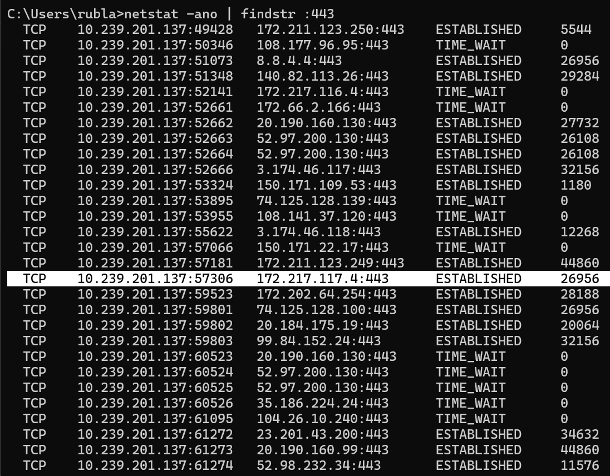
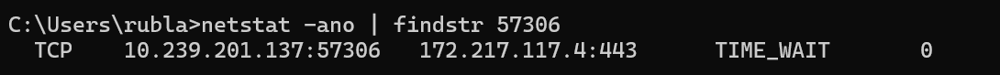
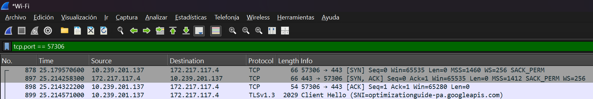
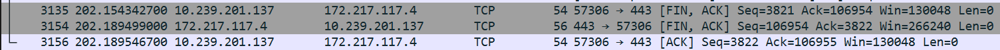
2.1.2. Copy a file from your local host to the studife.it.p.lodz.pl server using the FTP protocol. Use netstat and Wireshark to identify ports which are used for data transmission (local and remote port numbers). Finish the connection and check the local port status.
Initially, we attempted to connect to the university servers (studife.it.p.lodz.pl and studife.cti.p.lodz.pl) using the standard FTP protocol on port 21. However, the connection failed immediately: studife.it.p.lodz.pl dropped the session with a 421 Service not available error, while studife.cti.p.lodz.pl returned an ECONNREFUSED (Connection refused) error. Checking netstat confirmed that no TCP connection was established on port 21. This behavior proves that the FTP daemon is disabled on the university servers for security reasons (as FTP transmits credentials and data in plaintext), requiring encrypted alternatives like SSH/SFTP instead.
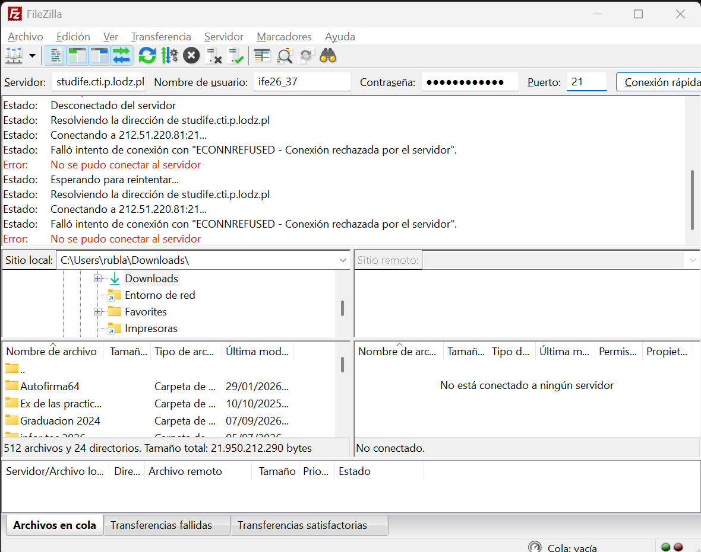
Following the instructor's clarification to use any available FTP server to observe the protocol's behavior, we deployed a local FTP server using Python (pyftpdlib) listening on 127.0.0.1 at TCP port 2121 (used instead of port 21 to run in user space without root privileges). We then connected from our local FTP client, enabled passive mode (passive), and uploaded a sample file (test_ftp.txt) using the put command
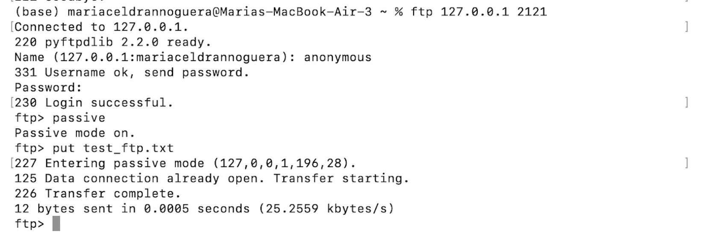
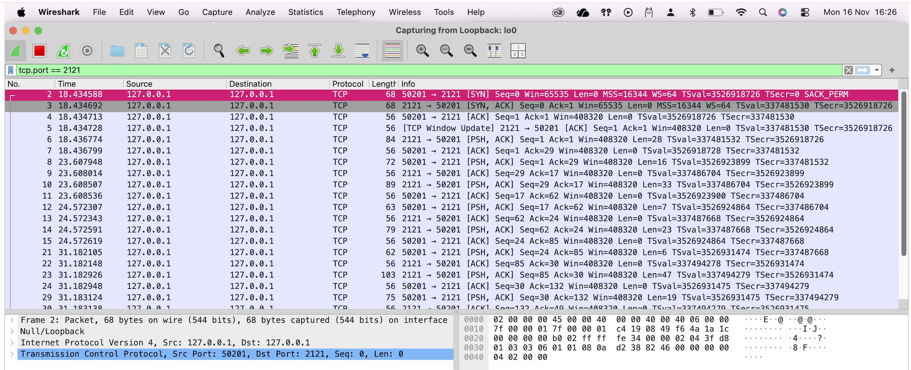
This screenshot shows the FTP control connection captured on my Loopback interface (127.0.0.1) between my local client port (50201) and my local server port (2121). It captures the initial TCP 3-way handshake (SYN, SYN-ACK, ACK) followed by the exchange of FTP login and file upload commands (PSH, ACK).
During the active session, netstat -an -p tcp | grep 2121 showed the control connection in the ESTABLISHED state. Once the file transfer completed, the data connection closed immediately. After terminating the FTP session with the bye command (sending a TCP FIN packet), re-running netstat showed that the local client port transitioned to the TIME_WAIT state—ensuring any delayed packets in the network are properly handled—before finally releasing the socket and returning to CLOSED.
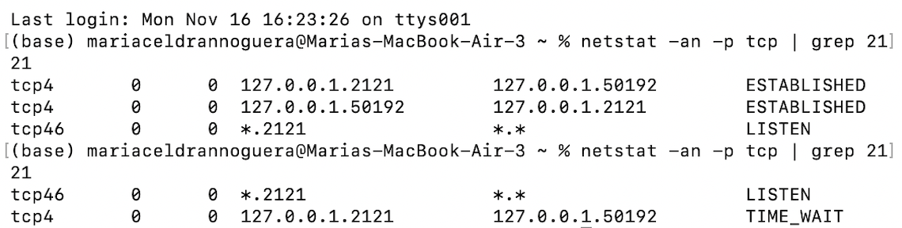
2.1.3. Copy a file from your local host to the studife.it.p.lodz.pl server using the SCP or SFTP protocol. Use netstat and Wireshark to identify ports which are used for data transmission (local and remote port numbers). Finish the connection and check the local port status.
Transferring the file Hi.txt to the public_html directory on studife.cti.p.lodz.pl (212.51.220.81) was performed via command line using the SFTP protocol over SSH on remote TCP port 22. During the active transfer, netstat confirms an ESTABLISHED TCP connection between the local VPN interface dynamic port (172.26.228.153:59063) and remote port 22. After terminating the SFTP session with the exit command, Wireshark shows that the client closes the socket immediately with a TCP RST-ACK packet, and re-running netstat confirms that local port 59063 is completely closed and released. Wireshark captures filtered by TCP port 22 also display the initial TCP three-way handshake (SYN, SYN-ACK, ACK).
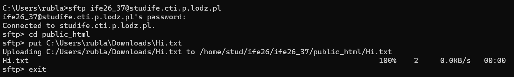
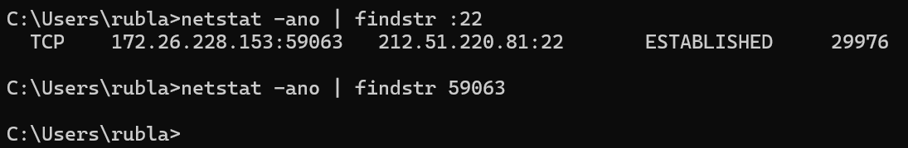
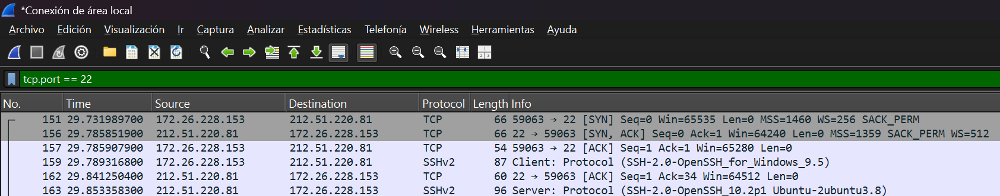
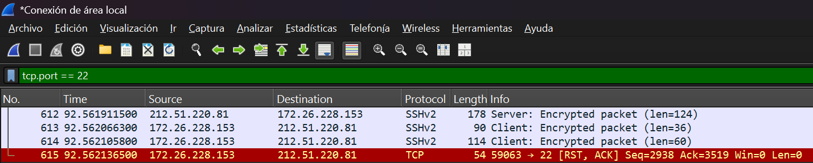
2.1.4. Use Wireshark to check which protocol and port are used in the transport layer by the DNS protocol.
By checking the network capture in Wireshark (using the display filter dns), we can see that the DNS protocol uses UDP at the transport layer. The packet details show that each DNS query is sent to port 53 on the DNS server, and the response returns from port 53 to that same local port. UDP is used because DNS messages are small and a fast, connectionless exchange is more efficient than establishing a TCP connection. DNS can also use TCP on port 53 for large responses or zone transfers, but standard queries use UDP
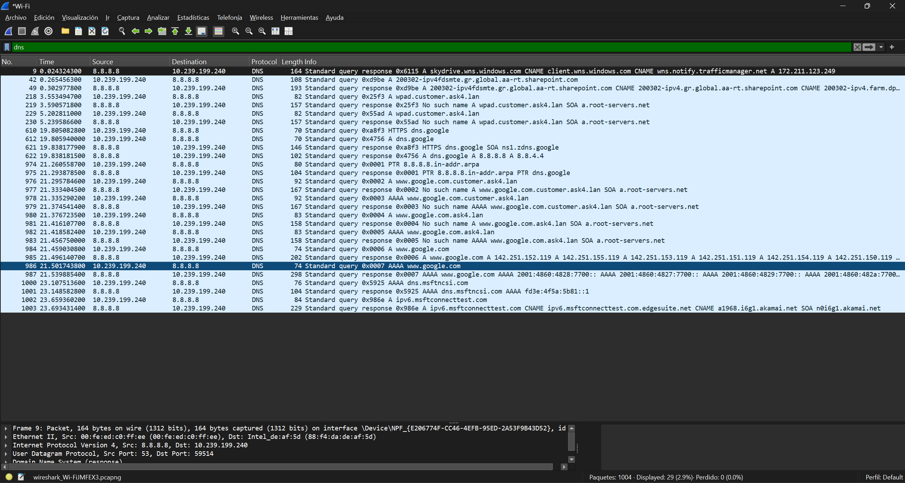